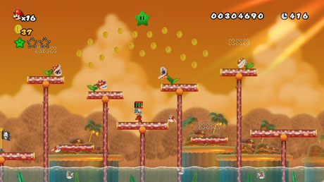
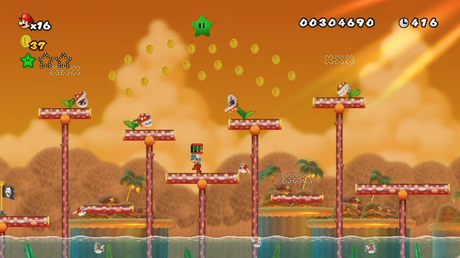

Hello, this is a thread for my fan hack, Super Mario Green Star Groove!
Way back when, I got involved in a hack known as New Super Mario Bros. Wii Deluxe. And man, did that go up in flames. It was a valuable experience for me, though, the people I was with on the project were pretty cool. The key thing here, is it sparked my interest in hacking the game further. Now, this particular hack began it's development a while back in the form of New Super Mario Bros. Gold, which was basically an Another Super Mario Bros. Wii kind of deal. It was pretty rough. Anyways, it later evolved into a hack of NSMBW that's goal was for me to use a bunch of stuff created by the community in a pretty modest hack of the game. Now, it is a Newer hack, and I'm hoping to use my experience and newfound knowledge to create an enjoyable Mario adventure.
Mario, Luigi, Toadette, and Toad set out to collect Green Stars across the Leaf Kingdom to defeat the invading Bowser and his minions!
This hack will feature custom tilesets created by the community, several of which by joietyfull64, and a few tileset edits of my own, custom music remixed from files acquired from VGMusic.com and other sources, in Garageband/Logic Pro X, custom backgrounds, several also by joietyfull64, and a few background edits of my own, retextured elements, and custom world maps along with new themes. In addition, there is a hidden (and sometimes not-so-hidden) Luigi in every level.
Immense credit should be given to the Newer Team for all their hard work put into NewerSMBW.
There's no definite release date for this hack. I have other things to do IRL, and this is more of a hobby than anything. It will be finished someday, however. I really appreciate if you read to this point, and I hope you enjoy the final product, whenever it's out! More frequent updates are something I hope to strive for.
Thank you so much for the kind words! Time for a much needed update, haha...
But first, other stuff. The pipe cannon sprite uses whatever is in the "green pipe spot" of the Pa0 tileset you're using. In that course, I used Pa0_jyotyu_daishizen from joietyful64's New Super Mario Bros. Me pack, which replaces the green pipe with one that has vines covering it, so when that's applied to the pipe cannon sprite, it distorts it accordingly, resulting in what you see in the video.
The music was remixed from midi files in Logic Pro X (with a bit of Garageband thrown in), I'm no music expert but I try to make them sound as nice as that kind of thing can. Credit will be prominently displayed for the amazing artists who sequenced/ripped the midis in the first place, of course.
In the case of the clown car course, at the end of it will be a special exit, which would force you out of it. Also, anybody who has tried to use the clown car in a normal course might know it just clips through walls when the screen auto-scrolls, but I have a fix for this as well, kind of a hacky one, but it prevents the clipping from being abused to cheat it too easily at least. If you get yourself into the wall, you take constant damage.
Editing the course clear text isn't that complicated, you do a small bit of hex and there you go, learned how from this tutorial on the board.
As for what's going on right now, currently I plan on releasing a demo version for this project very very soon, about a week or so's time, just need to tie a few loose ends first before I release it. It features 12 regular courses and 2 challenge courses from the project, a bonus remake course for playing the demo, and a (bad) custom map which is mainly a glorified level select. Custom graphics, music, HUD elements, and the other obvious stuff, too.
The reason for making a demo is because this project has kind of just been around for a while and I want there to be something of it for people to play for being so patient. Ironically, as happens with demos for anything, it was kind of a time sink, but one I'm mostly okay with in the end. After this is all said and done I hope for it to be business as usual, getting back on track, releasing another real actual main trailer not too long into the future. Also, some regular previews too, especially since the current ones are once again outdated.
This is looking pretty sweet! You've got some interesting ideas, like the power-up specific blocks, and that nifty day-night system in Eclipse Ruins, especially with the incorporation of the Angry Sun and Moon. Courses that have alternate layouts like that are very always very cool. Keep at it!
People playing the demo and seeing how they react to some things in it has been very helpful. My way of thinking with the Purple and Orange blocks is that they would be a consistent way to show what blocks break, and where blocks will spawn after pressing a switch, but it's a bit confusing to also use them for enemy defeating events as well. Would be best to use another coloration of blocks for events like that, which is something I'm doing from now on. And maybe another color for something else, too...
As I've said elsewhere, the point of the signs in Toxic Creek Leak was to show that something would be coming from offscreen, but it would be much clearer if these were a custom tileset sign showing a Piranha Plant instead.
In Doki Doki Dunes, there's five cherries, one of them being hidden in a wall. Also, if you die and spawn from the checkpoint, you don't keep the cherries, since they're location events that need to be triggered. They reward you with a Super Star that spawns in the Roy encounter. As for the Flame Chomps, I feel they're the closest thing to Phantos in NSMBW, I really enjoy how I was able to recreate them chasing you from offscreen after hitting the Purple Switch thanks to the Actor Spawner.
Will probably remove a Hammer Bro or two in Hammer Bros. Hideout, since it is meant to be in World 1 of the mod after all. On that note, Green Star House A is located in World 2 of the mod, so houses later in the game would be more challenging.
Among these will be other minor adjustments to these courses, and other areas of the mod, following the reception to the demo. I may or may not release one more patch for the demo to bring things up to date, but I would probably want to add a bit more to make it worth it. Maybe a few extra courses...
Trying to focus on progressing the overall mod, so we'll see. Thank you two for the honest critiques!


 
